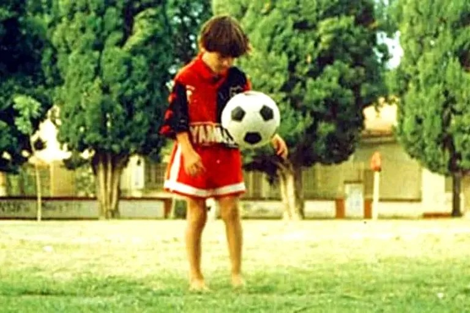
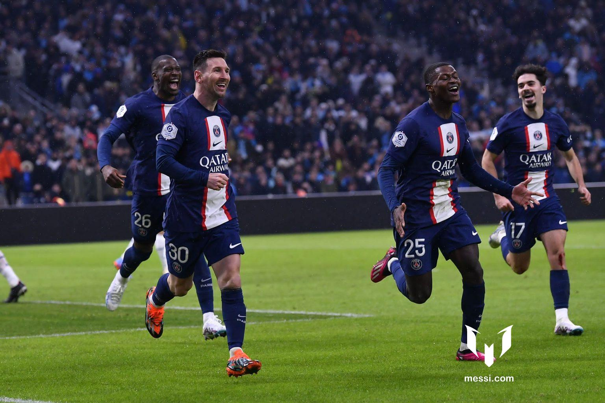
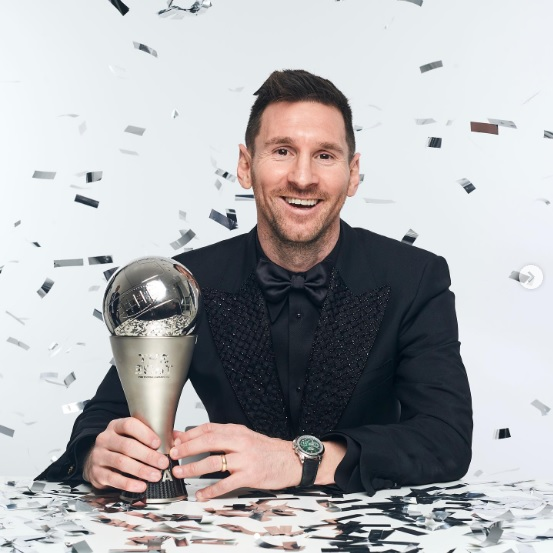
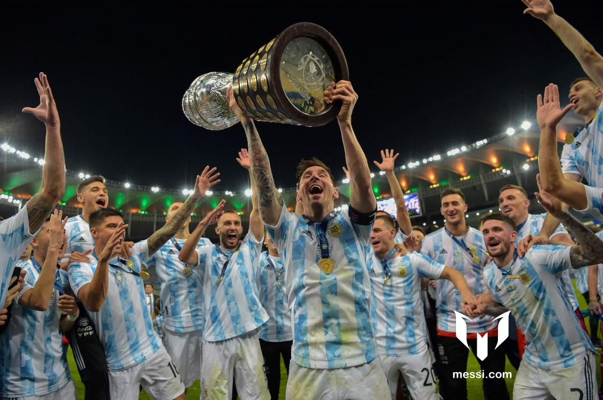
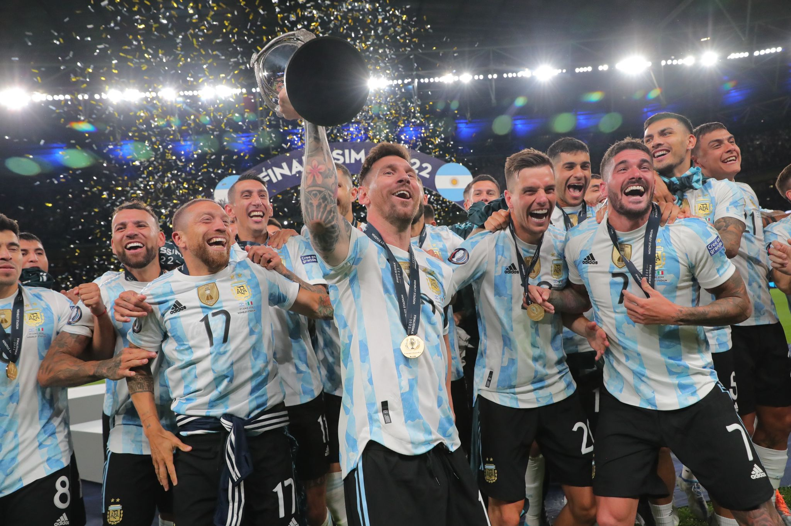
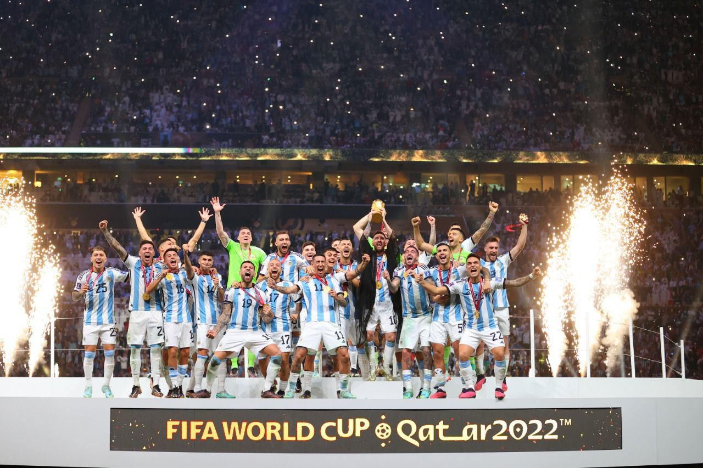

Datos personales
Lionel Andrés Messi nació el 24 de junio de 1987 en el Hospital Italiano Garibaldi de la ciudad de Rosario, en la provincia de Santa Fe. Es el tercer hijo de Jorge Horacio Messi y Celia María Cuccittini. Tiene dos hermanos mayores, Rodrigo y Matías, y una hermana menor, María Sol.
Foto: inferiores de Newell's Old Boys
Con apenas cuatro años, comenzó a practicar fútbol en el club Abanderado Grandoli, ubicado al sur de Rosario, en el barrio Grandoli, a pocas cuadras de su casa.15 Su primer entrenador fue Salvador Aparicio.12 En 1994, comenzó a entrenarse en las divisiones inferiores de Newell's Old Boys.
Actualidad
EL PSG SE IMPONE EN EL CLÁSICO CON GOL Y DOS ASISTENCIAS DE LEO.
Foto: PSG - Francia
El Paris Saint-Germain se llevó ‘Le Classique’ 0-3 ante el Olympique de Marsella en un partido en el que Leo anotó un tanto y consiguió su gol 700 a nivel de clubes en toda su carrera. Además, el argentino también dio dos asistencias a Mbappé para el primer y el tercer gol. De esta forma, Leo suma 17 goles y 16 asistencias en lo que va de temporada 2022/2023. El equipo parisino continua en lo más alto de la Ligue 1 con 60 puntos, ocho más que su perseguidor.
Acerca de mí
Leo ganó el premio The Best en la gala celebrada este lunes en Paris. El argentino se impuso en la votación a Mbappé y Benzema y de esta forma consigue por segunda vez este premio después de haberlo ganado en 2019.
Selección Argentina
  Sígueme